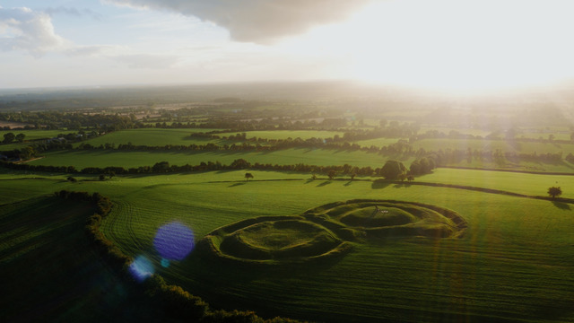
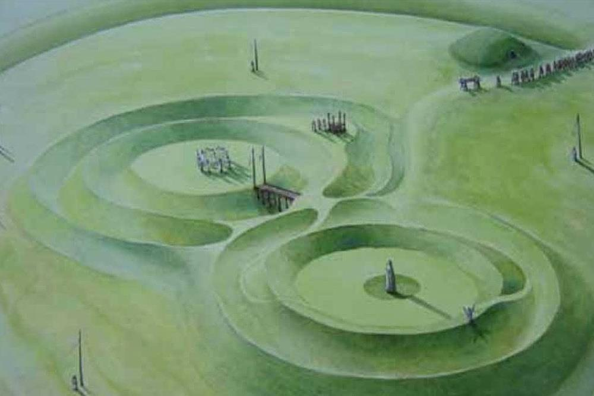
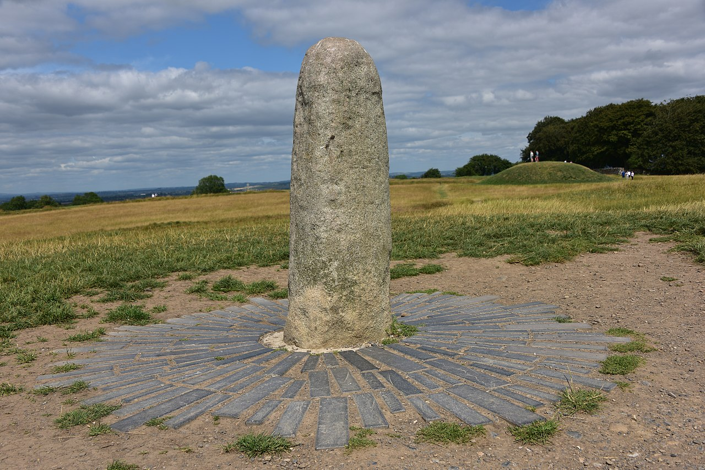
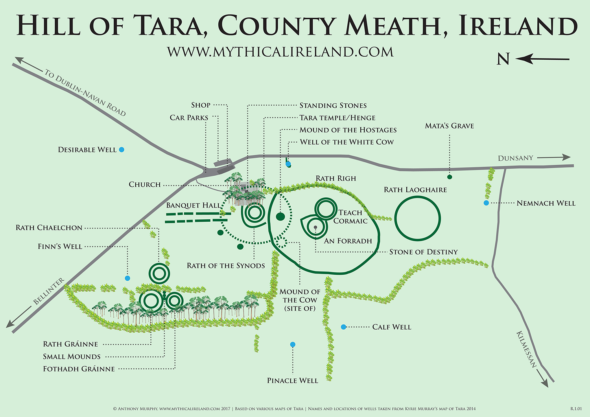

The Hill of Tara
Sanctuary of the Kings
 The Hill of Tara is a low-lying ridge located between Navan and Dunshaughlin in Co. Meath. It is said that a quarter of the landscape of Ireland can be seen from the hill. Tara gets its name from Teamhair na Rí meaning ‘sanctuary of the Kings.' It is important as the traditional inauguration site of the ancient High Kings of Ireland. Although few of its monuments survived the test of time, it is an evocative place, much celebrated in Irish myth and legend.
At the summit of the hill, to the north of the ridge, is an oval Iron Age hilltop enclosure, measuring 318 metres (1,043 ft) north-south by 264 metres (866 ft) east-west and enclosed by an internal ditch and external bank, known as Ráith na Ríogh (the Fort of the Kings, also known as the Royal Enclosure). The most prominent earthworks within are the two linked enclosures, a bivallate (double-ditched) ring fort and a bivallate ring barrow known as Teach Chormaic (Cormac's House) and the Forradh or Royal Seat. In the middle of the Forradh is a standing stone, which is believed to be the Lia Fáil (Stone of Destiny) at which the High Kings were crowned.
A place of importance
Tara was an important site long before the High Kings. A passage tomb known as Dumha na nGiall (meaning ‘the mound of the hostages') is the oldest visible monument and dates from around 3,000 BC. However, Tara became truly significant in the Iron Age (600 BC to 400 AD) and into the Early Christian Period. In 433 St. Patrick, on the nearby Hill of Slane, lit the Paschal fire in defiance of the Pagan King of Tara. Tara was the royal centre of Mide (meaning ‘the middle kingdom'), the fifth province of ancient Ireland. It incorporated the present Co. Meath and what is now Westmeath and large parts of Cavan and Longford. One of the most interesting monuments at Tara is the Lia Fáil (Stone of Destiny), which is a standing stone located within an area known as the Forrad (The Royal Seat). This was the inauguration stone of the Kings of Tara. According to tradition, when a true Irish or Scottish King placed a foot on Lia Fáil it cried out to announce his rightful reign.
The Lia Fáil (Stone of dystany)
There are several different, and conflicting, legends in Irish mythology describing how the Lia Fáil is said to have been brought to Ireland.[2] The Lebor Gabala, dating to the eleventh century, states that it was brought in antiquity by the semi-divine race known as the Tuatha Dé Danann. The Tuatha Dé Danann had travelled to the "Northern Isles" where they learned many skills and magic in its four cities Falias, Gorias, Murias and Findias. From there they travelled to Ireland bringing with them a treasure from each city – the four legendary treasures of Ireland. From Falias came the Lia Fáil. The other three treasures are the Claíomh Solais or Sword of Light, the Sleá Bua or Spear of Lugh and the Coire Dagdae or The Dagda's Cauldron.
Some Scottish chroniclers, such as John of Fordun and Hector Boece from the thirteenth century, treat the Lia Fáil the same as the Stone of Scone in Scotland.[1] According to this account the Lia Fáil left Tara in AD 500 when the High King of Ireland Murtagh MacEirc loaned it to his great-uncle, Fergus (later known as Fergus the Great) for the latter's coronation in Scotland. Fergus's sub-kingdom, Dalriada, had by this time expanded to include the north-east part of Ulster and parts of western Scotland. Not long after Fergus's coronation in Scotland, he and his inner circle were caught in a freak storm off the County Antrim coast in which all perished. The stone remained in Scotland which is why Murtagh MacEirc is recorded in history as the last Irish King to be crowned on it.
More photos
